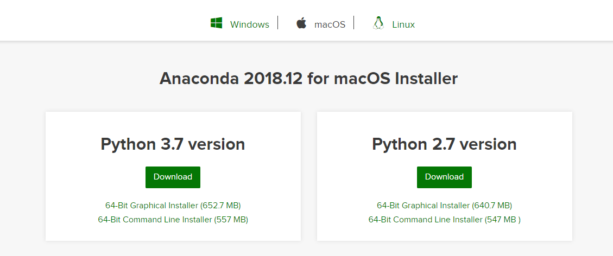

Installation & Setup
Inhalt
Installation & Setup¶
Grundlagen¶
Im Rahmen dieses Kurses werden wir Python nutzen. Um Programme in Python zu schreiben, benötigen wir prinzipiell nur zwei Dinge.
Ein Programm, in dem wir unseren Python-Code schreiben
Ein Programm, welches den Inhalt der Textdatei als Python erkennt, diesen Code zu interpretieren
Für ersters benötigen Sie theoretisch keine spezielle Software, da hier jeder einfache Texteditor ausreichend ist. Für zweiteres benötigen wir Python.
In Abhängigkeit davon, wie wir Python nutzen wollen gibt es eine Vielzahl an Programmen, die uns beim Schreiben von Python helfen. Professionelle Softwareentwickler nutzen z.B. sogenannte IDE software (integrated development environment) wie visual studio code oder pycharm.
Wir werden eine Umgebung nutzen, die explizit für die Bedürfnisse der Datenanalyse konzipiert wurde: Jupyter Notebooks (siehe hier).
Jupyter Notebooks (JN) sind eine interaktive Umgebung innerhalb der Sie
Programmcode schreiben und ausführen können (nicht beschränkt auf Python),
Ergebnisse visualisieren können,
Markdown, HTML oder Latex (für mathematische Formeln) nutzen können
Es handelt sich deshalb um eine Form des Literate Computing in der komplexe Analysen durchgeführt UND erläutert werden
können. JN bieten sich deshalb für komplexe Datenanalyse sehr gut an und haben sich hier als “state of the art” Werkzeug durchgesetzt.1
Installation von Python und Jupyter Notebooks¶
Variante 1: Google Colab¶
Es ist keine Voraussetzung, dass Sie Python und Jupyter Notebooks lokal auf ihrem Computer installieren. Sie können stattdessen die von Google angebotene Cloud-Variante von Jupyter Notebooks nutzen: google colab. Das ganze ist kostenfrei verfügbar und Sie benötigen dafür lediglich einen Google-Account.
Variante 2: Lokale Installation¶
Alternativ können Sie Python auch lokal auf Ihrem Computer installieren. Hierfür gibt es verschiedene Varianten. Wir empfehlen Anaconda für die Installation von Python und viele der relevanten Bibliotheken zu nutzen.
Gehen Sie dafür auf die Webseite und laden sich Anaconda herunter und installieren das Programm. Das Programm ist für Windows und Mac jeweils kostenlos verfügbar.

Sobald dies geschehen ist, können Sie den sogenannten Anaconda Navigator öffnen und Jupyter Notebooks oder Jupyter Lab nutzen.